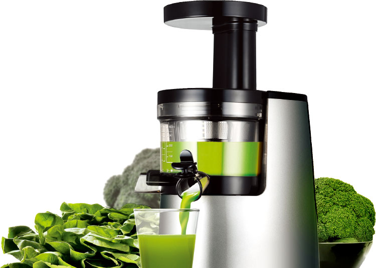
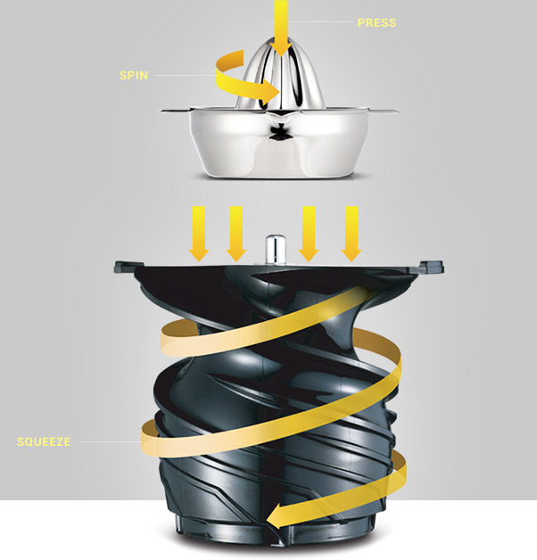

가장 건강한 습관
휴롬주스
휴롬주스는 먹기 힘든 많은 양의 채소와 과일을
손쉽게 섭취할 수 있으며,자연의 맛과 영양을 그대로 담아냅니다.

인류 건강을 위한 기술
스퀴저 원리를 혁신적으로 발전시킨 휴롬 저속착즙기술(SST™)과
인류의 건강한 삶을 위한 기술을 끊임없이 연구합니다.
RECIPES
나에게 맞는 휴롬주스 만들기
홈메이드 휴롬주스는 채소, 과일, 곡류, 견과류 등 신선한 재료를 직접 골라
다양한 맛과 영양을 한잔에 담아 즐길 수 있습니다.
-
ORANGE
CARROT오렌지의 풍부한 비타민 C가 시력 개선
효과가 있는 당근의 주 영양소인
베타카로틴과 비타민 A의 흡수를 효과적으로
도와주어 시너지 효과를 볼 수있는 주스입니다.오렌지 당근 사과
-
APPLE CUCUMBER
SPINACH오이의 칼륨은 부종을 완화시켜주고
사과의 식이섬유소는 변비 예방에 도움을주며
시금치의 철분 섭취로 인해
빈혈 예방에 도움되는 주스입니다.오이 사과 시금치
-
APPLE NUT
SHAKE사과의 식이섬유소는 장 운동을 활발하게
해주며 견과류로 부족할 수 있는
필수지방산 섭취를 보충할 수 있습니다.사과 아몬드 고구마
#HUROM4HEALTH
휴롬 건강 라이프 스타일을 #HUROM4HEALTH 해시 태그로
페이스북, 트위터, 인스타그램에 올려주세요.